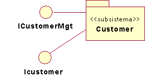
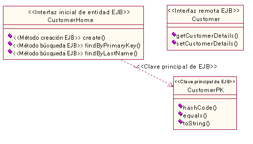
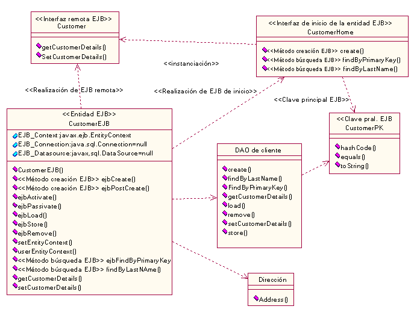

| Directriz: Diseño de subsistemas para aplicaciones J2EE |
 |
|
| Elementos relacionados |
|---|
IntroducciónEn esta directriz se complementa la sección Directriz: subsistemas de diseño con ayuda específica para el desarrollo de aplicaciones J2EE. Es recomendable leer la sección Directriz: subsistemas de diseño antes de leer estas directrices específicas para J2EE. Estas directrices se aplican al diseño de subsistemas con una granularidad mayor que EJB individuales. Consulte la sección Directriz: Enterprise JavaBean (EJB) para conocer las directrices relacionadas con EJB. Observe que también se considera que un cliente de aplicación es un subsistema de diseño especializado. Consulte la sección Directriz: cliente de aplicación J2EE para obtener más información. Evolución de los subsistemas de diseñoCuando se identifica por primera vez un subsistema, inicialmente éste puede ser tecnológicamente neutral. Esto es, se puede especificar mediante interfaces, una descripción de texto y algunas máquinas de estados que describan el comportamiento esperado de las operaciones. Sin embargo, estos subsistemas tecnológicamente neutrales habitualmente evolucionan a representaciones tecnológicas específicas. A continuación se muestra un ejemplo de cómo un subsistema de diseño tecnológicamente neutral evoluciona a un subsistema tecnológico específico. Especificación del subsistema (vista de caja negra del subsistema)Una especificación de subsistema se puede modelar inicialmente como si tuviese interfaces UML abstractas. Considere el diseño preliminar de un subsistema Customer, que se muestra en la figura 1.  Figura 1: diseño preliminar del subsistema Customer ICustomerMgt se define en más detalle con operaciones, como "getCustomerDetails" y "setCustomerDetails". A medida que el diseño se hace más detallado (Tarea: subsystem_design_real-time_design), estas interfaces abstractas se sustituyen con un lenguaje y elementos tecnológicos específicos. (Se puede elegir mantener el modelo abstracto del subsistema; por ejemplo, si hay la necesidad de implementar el mismo diseño en más de un lenguaje o tecnología. Consulte la sección Concepto: correlación del diseño al código para obtener más información sobre estas opciones). El correspondiente diseño del Producto de trabajo: realización de guiones de uso se actualiza para que coincidan los cambios de interfaz. En este ejemplo, la figura 2 es una vista de especificación o caja negra del subsistema Customer. El diseño posterior indicó que el subsistema Customer debería ser una entidad EJB. El subsistema de diseño preliminar se transforma en interfaces EJB tal como se indica:
 Figura 2: vista de caja negra del subsistema de diseño de Customer. Las interfaces que exponen los subsistemas de diseño pueden incluir interfaces Java regulares, interfaces EJB (como interfaces Java), interfaces EJB (remotas e iniciales) o incluso una o más clases de delegados o de acceso que ocultan totalmente la existencia de uno o más EJB. Observe que todas estas interfaces, incluidas las de Java, se modelan como clases UML y no como interfaces UML (consulte la sección Directriz: interfaces para aplicaciones J2EE para obtener más información). Por ejemplo, a menudo se utiliza un bean de sesión como una fachada para acceder a un conjunto de beans de entidad estrechamente relacionados. En este caso, sólo se exportarían del subsistema interfaces de beans de sesión. Los beans controlados por mensajes consumen de forma asíncrona mensajes de un destino (o punto final). Por lo tanto, un destino podría también servir como una "interfaz" de un subsistema de diseño que contuviese beans controlados por mensajes. Observe que puesto que otros EJB estrechamente acoplados dentro del mismo subsistema de diseño utilizan las interfaces locales, ellos aparecen en la realización de subsistemas más a menudo que en las interfaces visibles que un subsistema expone. Consulte la sección Directriz: interfaces para aplicaciones J2EE para obtener más información sobre interfaces en una aplicación J2EE. Consulte la sección Directriz: Enterprise JavaBean (EJB) para obtener más información sobre cómo modelar EJB. Realización del subsistema (vista de caja blanca del subsistema)Los subsistemas de diseño sólo deberían exponer lo que los clientes necesitan. Por lo tanto, la clase que implementa un EJB es privada en relación con el subsistema y es una parte lógica de la realización del subsistema. La realización del subsistema puede convertirse en:
Continuando con el ejemplo del subsistema Customer, la realización del subsistema incluye:
En la figura 3 se muestra una vista de caja blanca (esto es, dentro del subsistema) del subsistema de diseño. Observe que las clases EJB se modelan de acuerdo a lo descrito en la sección Directriz: Enterprise JavaBean (EJB). Se hace referencia a esta vista interna del subsistema como una realización del subsistema. En esta vista, se ven las decisiones ocultadas a los clientes. Por ejemplo, en esta realización del subsistema una clase DAO (Data Access Object) accede a los datos persistentes utilizando la API JDBC. (En otro diseño, se podría haber utilizado la persistencia gestionada por contenedor). Consulte la sección Directriz: Enterprise JavaBean (EJB) para obtener más información sobre las clases DAO.  Figura 3: vista de caja blanca del subsistema de diseño de Customer. |
© Copyright IBM Corp. 1987, 2006. Reservados todos los derechos. |